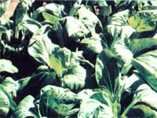

Here are a few tips on building healthy soil from two folks who make a full-time job of it.
STAFF PHOTOS
Master gardeners Kerry and Barbara Sullivan (with Peter Escher) welcome spring to MOTHER'S Eco-Village...
Here's Kerry fertilizing the beds where...
healthy double-dug rows.
marigolds will soon bloom beside the lettuce, and...
vitamin-rich greens will flourish in...
When news from our Ecological Research Center shows up in this magazine, it more often than not concerns some of our staffs technical endeavors (like the design and construction of the earth-sheltered house described on page 158) or our annual series of Show-Hows. But as those of you who've visited us know, the research going on at the Eco-Village takes any number of forms. And since this is the season when growers far and near are busily busting sod, hardening off seedlings, and-perhaps-even nibbling the year's first greens and radishes, we thought you might be interested in the doings of MOTHER'S gardeners, Kerry and Barbara Sullivan.
In only a few short years, the Sullivans have taken a piece of soil that hardly qualified as marginal and transformed it into a showplace . . . with carpets of flowers, and lush organically grown vegetables in groomed beds. But the gardeners rarely talk about their successes, since their primary concern is "the vast amount of work" they feel still needs to be done. And the focus of that labor is a constant effort to further improve the soil, because our master growers consider that medium the key to solving every potential garden problem.
Now almost everyone who's read articles about wholistic gardening has seen, over and over again, the statement that healthy plants are pest-resistant plants. However, when a plague of bean beetles or cabbage loopers chomps down on our own pampered (we think!) homegrown edibles, many of us suspect that this optimistic dictum may not always hold true! The brief history of MOTHER'S garden, though, already includes strong evidence that soil improvement can dramatically reduce insect damage.
Take flea beetles, for instance. The tiny black-bodied nibblers devoured the entire fall crop of mustard and turnip greens sown during the first months (August and September 1979) after Kerry and Barbara came to MOTHER. By the following spring, though, the soil had already been upgraded to the point that the greens were able-in effect-to outgrow the pests, and suffer only modest damage. And this past year, the garden suffered no flea beetle raids at all!
The couple's emphasis on-and study of-soil health has also given them a more understanding, and even tolerant, attitude toward pest outbreaks than most home gardeners have. Still, it would be misleading to say that they never employ defensive measures. The Sullivans will use Bacillus thuringiensis when cabbage worms get too numerous (although Barbara notes that their need for that agent has been dropping sharply . . . they sprayed BT only once last year). And they're "quick to pick" if unwanted hexapods threaten to get too numerous. In fact, the two were pretty well able to defeat the Mexican bean beetle menace that had-in a previous year-ruined their green bean harvest, by simply spending a couple of hours handpicking the first wave of the little varmints . . . thereby preventing the production of a more populous second generation of beetles.
Of course, although soil improvement is an effective insect-control strategy, creating a plant-enhancing and pest-resistant environment isn't a simple task. Indeed, the Sullivans are constantly working to promote their soil's health, tilth, and life by following five major practices: [1] rotating crops, [2] sowing cover crops, [3] composting, [4] double-digging, and [5] using biody-namic soil aids.
Kerry and Barbara make an estimated 10 to 15 tons of compost each year (and wish they had the time to produce more). They mixed a four-inch layer of organic matter-primarily dried, decomposed manure gathered from an old barn-into their garden when they first dug it, three summers ago, and have added at least an inch of homemade compost to the ground prior to each planting since!
In the past few years, many informed growers have come to appreciate the soil-lightening and moisture-preserving advantages of using raised, double-dug beds for flowers and vegetables. Kerry and Barbara were both trained in this practice-and in most of their other gardening techniques- when they were apprenticed to Alan Chad-wick . . . the man who originated the biody-namic/French intensive gardening method. (During their stretch as "sausages"-Chad-wick's term for all first-year students-under the eccentric but inspired gardener and actor, the Sullivans learned to appreciate Shakespeare's writings, Greek drama, and the spiritual side of gardening ... in addition to absorbing the more pragmatic aspects of Alan's plant-raising theories.)
But even if you're one of the relatively rare home growers who employ crop rotation, cover crops, compost, and double-digging, it's quite likely you don't know much about the fifth "secret weapon" our gardeners use: biodynamic sprays and preparations. Well, to be honest, Kerry and Barbara didn't either . . . until an elderly-but sprightly-horticultural consultant named Peter Escher visited MOTHER'S garden.
It seems that Peter spoke right up and (in a friendly manner, of course) actually criticized our growers' compost piles! He went on to suggest that the couple might be able to improve their humus-making operations if they applied a single ounce of a substance called biodynamic compost starter to each ton of soil amendment they created.
Barb and Kerry experimented with the product (described in biodynamic literature as "a concentrated mixture of several cultivated strains of beneficial soil bacteria, enzymes, and plant growth-promoting factors") and-lo and behold!-their humus broke down more quickly and thoroughly than it ever had before . . . had a lighter, more friable texture . . . and, wonder of wonders, even smelled better!
As you can imagine, the Sullivans were more than a bit impressed with these results. So they decided to try another biodynamic product ... a field spray used to speed up the decomposition of tilled-in cover or garden crops. And to the best of Kerry and Barbara's judgment that substance, too, had a positive effect. (Barbara claims that adding either compost starter or field spray to organic matter is a bit like putting baking yeast in bread: You could mix a batch without using a leavening agent and hope that surrounding wild yeasts would reach the dough and give you satisfactory results, but adding the proper yeast yourself certainly makes the procedure more reliable!) These two successes led the couple to experiment with other specialized biodynamic preparations such as a fungus-preventing Equisetum (horsetail) tea and a health-promoting fruit-tree paste.
At the same time, our gardeners began to explore the broader aspects of biodynamics, including the discipline's emphasis on attacking problems instead of symptoms (during his visit Escher described our garden's few still-existing pest troubles as the "childhood" diseases of a "young"-that is, still-developing-soil) . . . the life and writings of its founder, the clairvoyant philosopher Rudolph Steiner . . . and the teaching that gardening can be a means of working with, and connecting to, a greater spiritual reality.
The influences of biodynamic theory-coupled with Chadwick's instruction, and Kerry and Barbara's own astute sense of observation and tireless seven-day-a-week labor-have combined to make MOTHER'S garden the living jewel of the Eco-Village in not quite three years. But our master growers have grander plans for the future. They'd like to see their plot eventually produce enough wholistically grown flowers and food to support a community often gardeners and students . . . and-through the sale of surplus-pay for its own expenses.
EDITOR'S NOTE: Many of the topics touched on in this article-including composting, cover cropping, and the biodynamic/ French intensive method-are more thoroughly explained in THE Mother Earth News(restricted) Guide to (almost!) Foolproof Gardening . . . which Kerry and Barbara Sullivan helped us prepare. This 176-page publication is available-for $3.95 plus 95 cents shipping and handling-from Mother's Bookshelf(restricted), P.O. Box 70, Hendersonville, North Carolina 28791.
Several previous issues of MOTHER also contain useful related information. "Alan Chadwick Is Gone" (No. 66, page 70) ... a Newsworthies feature on Peter Escher (No. 68, page 62) . . . "Biodynamic/French Intensive Gardening" (No. 61, page 92) . . . and Plowboy Interviews with John Jeavons (No. 62, page 16) and A.P. Thomson (No. 67, page 14) are five noteworthy examples. (See page 148 to order back issues.)
A one-ounce bag of biodynamic compost starter (enough to treat one ton of compost) and a four-ounce bag of biodynamic field spray (sufficient for treating one acre of soil) can be ordered, for $4.50 and $12.00, respectively-plus $1.00 shipping and handling for orders under $10.00 and $1.50 for larger purchases-from the Pfeiffer Foundation, Threefold Farm, Dept. TMEN, Spring Valley, New York 10977 (you can also request information on publications about biodynamics).
Last, the Sullivans do-under certain conditions-accept garden apprentices. Write to. Kerry and Barbara at THE Mother Earth News(restricted), P.O. Box 70, Hendersonville, North Carolina 28791 for details.
|
|
|
|
|
|
 |
|